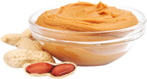

Bu tarif, yalnızca çiğ fıstığın kavrulup öğütülmesiyle yapılan katkısız bir fıstık ezmesidir. Hazır ürünlerdeki dolgu yağı, şeker ve düşük fıstık oranı riskine karşı içeriği tamamen siz belirlersiniz. Ev tipi bir kahve öğütücü ve küçük bir rondo yeterlidir.